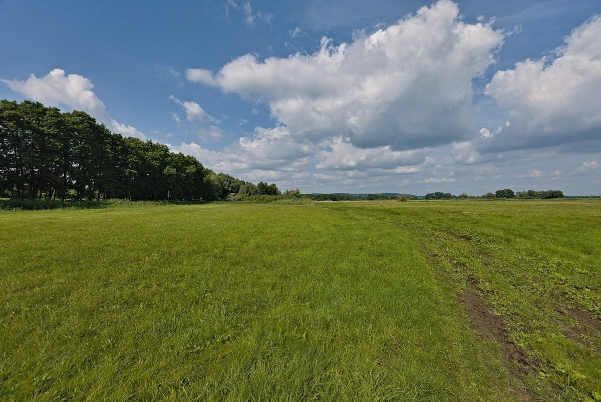

千葉県八千代市米本のカフェ
縁側のように、
ふらりと腰かけて
ひと息つける場所。
PUKU 八千代は、縁側のある建物の中のカフェです。野菜たっぷりのカレーとコーヒーで、近所の人も遠くの人も、ゆっくりひと休み。
お店のこと
地域に開かれた「縁側」の中のカフェ。
Instagramの紹介によると、PUKU 八千代は「52間の縁側」と呼ばれる建物の中にあるカフェです。この建物は、八千代市にある高齢者向けのデイサービス施設で、カフェや寺子屋、公衆浴場なども備え、地域でたすけ合う場として知られています。2023年度のグッドデザイン大賞に選ばれました。
情報源: PUKU 八千代のInstagram/グッドデザイン大賞の報道(アドタイ)/architecturephoto
店名「PUKU」の意味や、お店の始まりの物語は確認できていません。このページの見出しや言い回し(縁側のような場所、など)は制作側のイメージです。



メニュー
野菜たっぷりのカレーと、コーヒー。
Instagramでは、野菜がたっぷり入った欧風カレー、新鮮な野菜のサラダ、コーヒーとデザートが紹介されています。写真はイメージで、実際の品ではありません。価格・詳細は準備中です。

野菜たっぷりの欧風カレー
価格: 準備中

新鮮な野菜のサラダ
価格: 準備中

コーヒー
価格: 準備中

デザート
価格: 準備中


営業時間・定休日・価格は変更されることがあるため、掲載せず「準備中」としています。最新情報はInstagramをご覧ください。
口コミ
こんなお声が届くお店に(イメージ)。
イメージ例
野菜の甘みがじんわり広がるカレーで、午後も元気に過ごせました。
イメージ例
縁側のようなゆったりした空気で、つい長居してしまいました。
イメージ例
食後のコーヒーとデザートまで、のんびり楽しめました。
上記は制作側が作成したイメージ例で、実際のお客様の声ではありません。